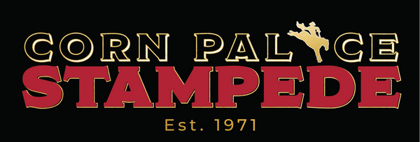
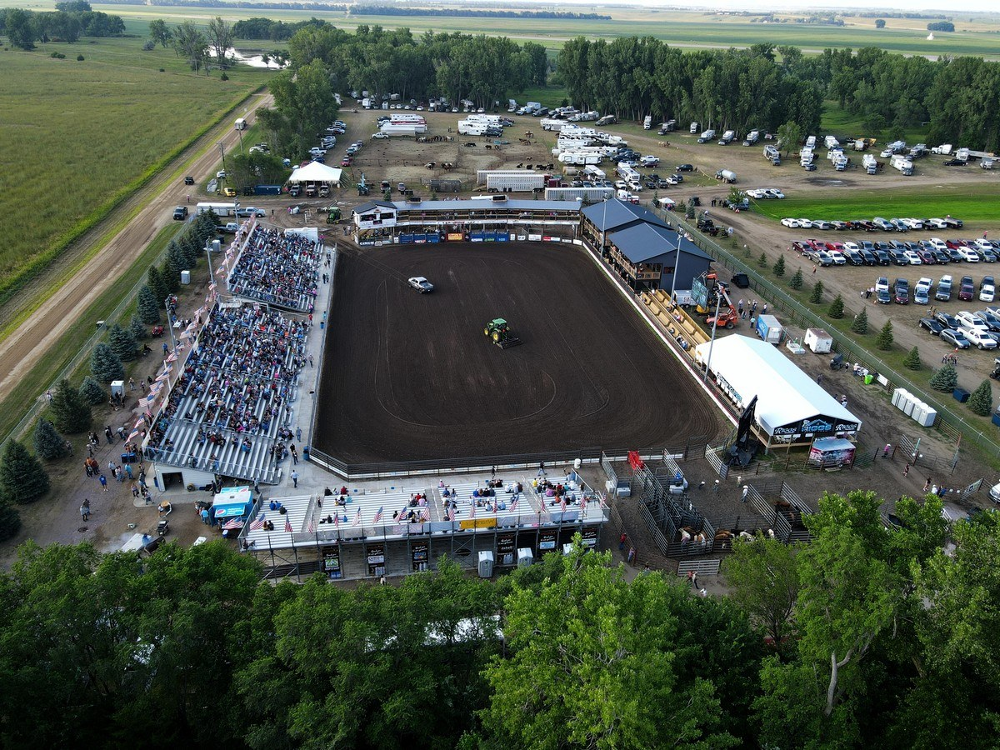
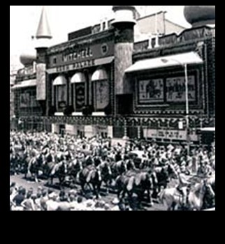
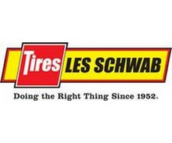
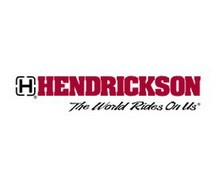
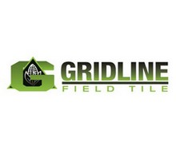
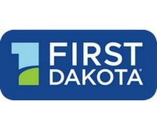
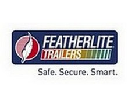
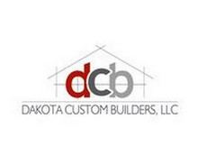

13JUL · TUE
COMMUNITY KICK-OFF
Free-admission BBQ · Stampede Park

THE WEST RIDES AGAIN
Feel the thunder. Celebrate the tradition. Make memories at the Corn Palace Stampede PRCA Rodeo.
JULY 15–18, 2027Four days of celebration
PRCA RODEOProfessional rodeo action
STAMPede PARKMitchell, South Dakota
FAMILY & COMMUNITYTradition for all ages

A SOUTH DAKOTA TRADITION
For generations, the Corn Palace Stampede Rodeo has brought together rodeo fans, professional athletes, families and visitors from across the country.
From the courage and skill inside the arena to the hometown parade and family celebrations, the Stampede is a proud expression of Western heritage and community spirit in Mitchell, South Dakota.
COME BE PART OF IT →THE ACTION. THE TRADITION. THE FUN.
From the explosive power of the bulls to the family moments that make memories, explore the events that bring Stampede weekend to life.
TURN UP THE STAMPEDE
There's nothing like rodeo night. Get a taste of the action and start planning your Stampede weekend.
BE THERE IN 2027 ↗SAVE THE DATES
Free-admission BBQ · Stampede Park
Stampede Park · Mitchell, SD
Stampede Park · Mitchell, SD
Mitchell Main Street · Parade entry registration
Stampede Park · Mitchell, SD
Cowboy Church 10 AM · Chili Cook-Off 11 AM–2 PM
Stampede Park · Mitchell, SD
Event details and times should be confirmed by the rodeo committee before publication.
YOUR SEAT IS WAITING
Join us July 15–18, 2027 for four days of rodeo action and community celebration in Mitchell, South Dakota.
OFFICIAL TICKET INFORMATION ↗ E-Tix is the rodeo's only official online ticketing partner. Always use the official website's ticket links.FROM CPS – PRCA RODEO EVENTS

OUR ROOTS RUN DEEP
The Corn Palace Stampede is part of the story of Mitchell — a celebration shaped by agricultural roots, Western spirit and generations of community support.
DISCOVER OUR HISTORY →POWERING THE STAMPEDE
Our sponsors help make this community tradition possible. Please join us in supporting the businesses and organizations behind the Stampede.






MAKE YOUR WAY TO STAMPEDE PARK
Make plans to join us for the 55th Corn Palace Stampede PRCA Rodeo, July 15–18, 2027.
THE TRADITION CONTINUES